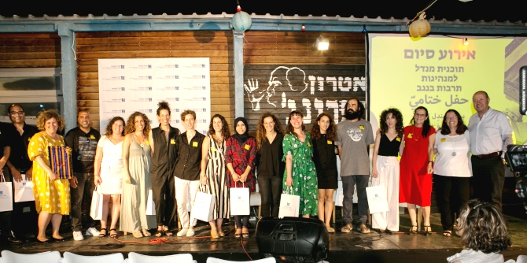
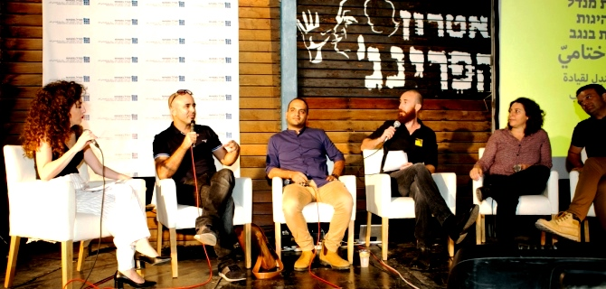
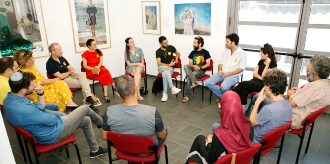
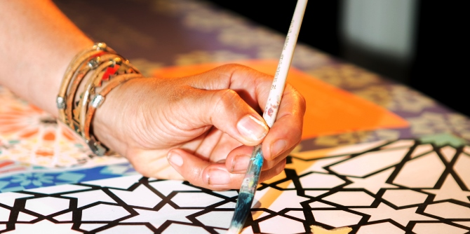

ארבעה-עשר הבוגרים הראשונים פועלים ומובילים במגוון תחומים: יצירה, קולנוע, תאטרון, ניהול מוסדות תרבות, עיצוב, רדיו, יזמות תרבות והפקת אירועי תרבות; בפריסה גיאוגרפית רחבה ביישובי הנגב.
באירוע נכחו מנכ"ל
הקרן מר משה ויגדור, ראשי רשויות:
רוביק דנילוביץ, ראש עיריית באר שבע, וערן דורון, ראש מועצה אזורית רמת נגב; אמנים ויוצרים, אנשי אקדמיה, קהילה ותרבות בנגב ובוגרי תוכניות מנדל בנגב.

ראש עיריית באר שבע בירך את העמיתים-בוגרים ושיתף בהשקפת עולמו שחזון הנגב בתחומי החיים השונים, ובהם גם עולם התרבות, משקף את חזון מדינת ישראל כולה, ולכן התפתחות לטובה בנגב היא השקעה לאומית. הוא בירך גם על השותפות העמוקה שהתפתחה לאורך השנים עם קרן מנדל והודה לעומד בראשה, מר מורטון מנדל, לנשיא הקרן פרופ' יהודה ריינהרץ, למנכ"ל קרן מנדל-ישראל מר משה ויגדור ולמנהלת המרכז בנגב ד"ר עדי ניר שגיא, ואמר כי פעילות מנדל מביאה את באר שבע להיות עיר איכותית עם מנהיגות חדשנית ואמיצה.

מנכ"ל קרן מנדל-ישראל הדגיש את חשיבות הכשרת העמיתים בתוכנית מנהיגות לתרבות – מנהיגות מבוססת ערכים ומשמעות המחוללת שינוי עמוק ומהותי. מנהלת מרכז מנדל למנהיגות בנגב בירכה ואמרה כי תרבות היא "מים במדבר" – תוכנית מנהיגות לתרבות מביאה חדשנות לפיתוח תרבות אזורית המתבססת על הייחודיות של הנגב ועל משאביו השונים – האנשים והמקום, תרבות שהיא זהות נגב מבוססת עבר והווה ומצפן ליצירת עתיד משותף איכותי.

באירוע הוצגו הפרויקטים שפיתחו העמיתים בתוכנית, ושהם שואפים לקדם בזירות הפעולה שלהם. את האירוע ליוותה בגרוב ובאנרגיות טובות להקת נגנים מקומית -
ג'ויה. בהמשך הערב התקיים פאנל של אנשי נגב בהנחיית עמיתי התוכנית. הפאנל עסק בסוגיות קידום התרבות למען הנגב וכלל את סגן ראש עיריית באר שבע ,
טל אלעל, את האדריכל
עמרי עוז המתכנן מרחבים ציבוריים בעיר, את
מיכל רומי מנכ"לית מקאן-ואלי במצפה רמון הפעילה חברתית ביישוב, ואת
וקאיד אבו לטיף, בוגר תוכנית מנדל למנהיגות אזורית ברהט (מחזור א') שהקים את תאטרון "אלמהבאש" – התיאטרון הבדואי הראשון. חברי הפאנל הציגו תפיסות מגוונות, אך המשותף לכולם הוא האמירה על הצורך בחיזוק התרבות המקומית, הבאתה לקדמת הבמה והשמעת הקול הייחודי של אמני הנגב עבור הקהילות בנגב וכבשורה למדינת ישראל.

לאירוע הוזמנו העמיתים החדשים שהתקבלו למחזור ב' של תוכנית מנדל למנהיגות תרבות בנגב, שתיפתח באוקטובר 2019. מפגש זה היה הזדמנות להיכרות ראשונית עם קהילת מנדל, הבוגרים הסגל, ולקבלת השראה מתוצרי התוכנית שהם עתידים להתחיל בקרוב.

{kind=link}
{kind=link}
{kind=link}
{kind=link}